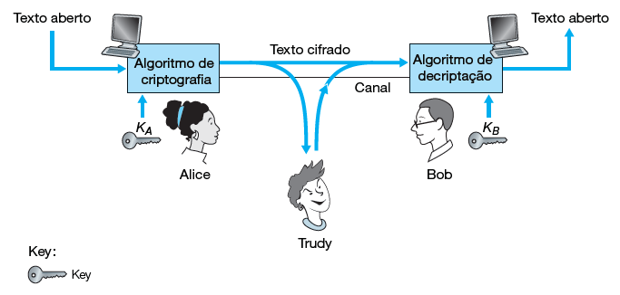
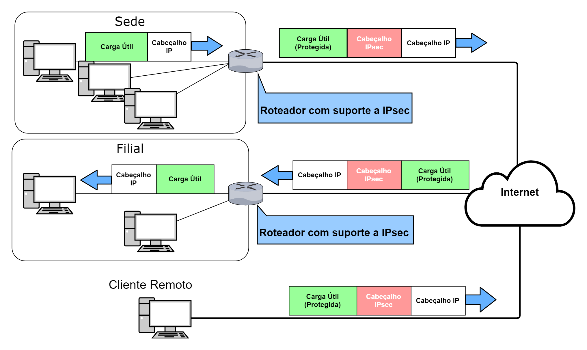
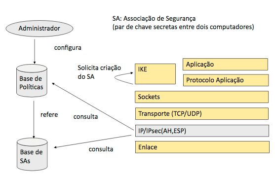
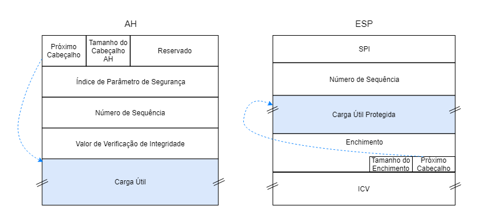
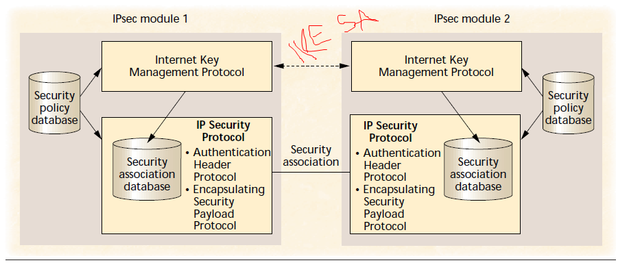
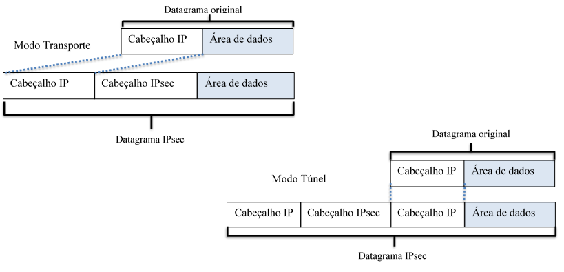
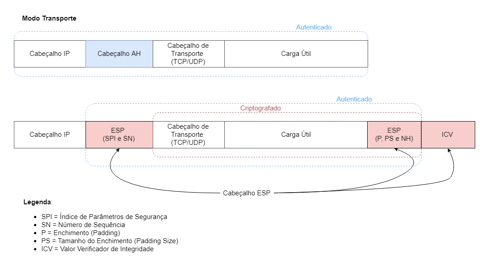
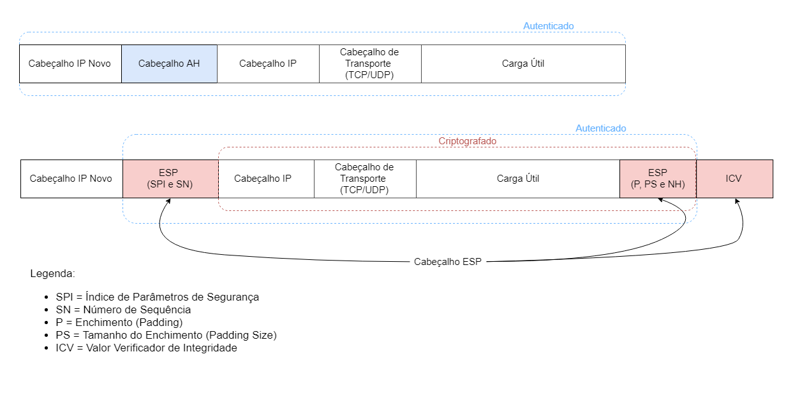

Na pilha de protocolos que regem a Rede de computadores, certamente a camada de rede (modelo TCP/IP) é a
mais genérica. Seu único protocolo, o IP (Protocolo da Internet) suporta qualquer protocolo das camadas
adjacentes. Atualmente existe uma variedade de aplicações que em sua base utilizam o protocolo IP
para rotear sua mensagens pela internet e entregar serviços ao usuários. Alterações a atualizações do mesmo
são extremamente evitadas, pois além de possivelmente afetar algumas das inúmeras aplicações existentes,
também implica em alterações no núcleo da rede de computadores, com alterações nos equipamentos dos fornecedores
de acesso a Internet.
Porém, com o crescimento de aplicações cresceu também a variedade de informações que trafegam pela Rede.
Não tardou para que informações sensíveis (como dados bancários) necessitassem de proteção para trafegar
num ambiente público como a Internet. Após anos de desenvolvimento, o IETF publicou o IPsec (Segurança do
Protocolo de Internet), um sistema de segurança que se mune de algoritmos de criptografia e autenticação
para garantir comunicações sigilosas e confiáveis na camada de rede.
Originalmente o IPsec foi desenvolvido para a sexta versão do Protocolo de Internet (IPv6). Porém, a adoção
do IPv6 mostrou-se muito lenta com o tempo, e o IPsec teve que ser retrabalhado (ainda em seu desenvolvimento)
para ser compatível também com a versão 4 (IPv4). Isto explica algumas incompatibilidades que o sistema apresenta
com NAT (Tradução de Endereço de Rede). Neste texto discute-se conceitos básicos de segurança de informação,
como introdução aos protocolos utilizados pelo IPsec. Após, aprofunda-se a discussão nestes protocolos,
como funcionam, o que oferecem e seus modos de operação. Breves contextualizações estão presentes ao longo do
texto, para melhor compreensão.
2. Conceitos Básicos
Como este texto refere-se a camada de rede, trabalha-se com apenas dois tipos de entidade: hospedeiro e
roteador. Portanto, a menos que seja explicitado, quando fala-se em entidade, subentende-se que
trata-se de qualquer uma das entidades da camada de rede.
Considerando que duas entidades queriam se comunicar de forma segura através de um meio público como a
Internet, algumas propriedade são desejáveis, conforme indicado em [KUROSE]:
Confidencialidade - apenas remetente e destinatário tem acesso a mensagem descodificada
Integridade da Mensagem - Confiança de que a mensagem não foi alterada durante a transmissão
Autenticação de Ponto Final - Remetente deve confirmar a identidade do destinatário e vice-versa
Segurança Operacional - O ambiente em que a mensagem é escrita deve estar bem protegido. Esta
característica não envolve o IPsec, e está além do escopo deste trabalho. Porém, é característica
fundamental de uma comunicação segura.
2.1. Criptografia
Uma mensagem sem codificação, tem seu conteúdo em texto plano (também conhecido como texto claro ou aberto).
Uma mensagem que passa por um algoritmo de criptografia passa a ter um conteúdo em texto cifrado, inteligível
para um interceptor na transmissão.
Técnicas e algoritmos de transmissão são publicados e padronizados na Internet (por exemplo as RFCs 1321, 3447, 2420).
Independente da técnica usada, uma mensagem criptografada só pode ser descriptografada com uma chave de
segurança. Esta chave (que pode ser a mesma para ambos ou exclusiva de cada um) serve de parâmetro para que o
algoritmo de decriptação possa transformar a mensagem em texto cifrado em uma mensagem em texto plano. A figura
2.1.1 ilustra os componentes básicos de um sistema de criptografia.

Figura 2.1.1 - Esquema geral de uma comunicação criptografada que é interceptada por um invasor.
Adaptada de [1].
2.2. Funções de Hash criptográficas
Funções hash criptográficas são usadas para atender a propriedade de integridade da mensagem em uma
comunicação segura, pois garante-se que a mensagem não foi alterada no meio do caminho.
Se diferem das funções hash comuns por serem funções bijetoras, ou seja, sempre há um único hash para a
mensagem escrita. Em outras palavras um invasor não consegue reproduzir o mesmo hash desconhecendo a mensagem
em texto plano. Algoritmos de hash criptografados bem conhecidos são o MD5[RFC 1321] e o SHA-1[FIPS, 1995].
2.3. Código de Autenticação de Mensagem
Nos cenários descritos, ainda é possível q o invasor crie uma mensagem qualquer, gere um hash válido e envie
para um receptor, falsificando sua identidade como remetente.
Portanto, emissor e receptor compartilham um segredo chamado de chave de autenticação de mensagem. Essa chave
é uma sequência de bits que é concatenada à mensagem original para o cálculo da função hash criptográfica.
O receptor, que possui o código de autenticação, calcula o hash da mensagem recebida concatenada de seu código.
Se o valor do hash recebido for igual ao do hash calculado, a mensagem é autêntica. A figura 2 ilustra esse
processo.
Sistema de empregando o código de autenticação de mensagem para garantir
a integridade da mensagem (imagem adaptada de [1])
2.4. Assinatura Digital
Têm-se até aqui, garantias de confidencialidade e integridade. Resta identificar um usuário. Ou seja,
garantir que aquela mensagem válida foi enviada pelo usuário X e somente ele poderia ter enviado essa mensagem.
Neste caso, uma alternativa é usar um par de chaves (uma pública e uma privada). A chave pública conhecida por
todos, inclusive pelo destinatário. O remetente "assina" sua mensagem utilizando sua chave privada no hash citado
na seção 2.2. O destinatário utiliza a chave pública do remetente para chegar ao hash da mensagem e utiliza a
mensagem para chegar ao hash da mensagem (como explicado na seção 2.3). Caso o valor obtido nos dois processos
seja o mesmo, o remetente está identificado.
3. Protocolos do IPsec
O Protocolo de Segurança da Internet (mais conhecido por sua sigla, IPsec) é um modelo de comunicação
segura de ponta a ponta através da Internet. Por ser implementado junto ao Protocolo da Internet (IP) na
camada de rede, é um sistema de segurança transparente às outras camadas da pilha de protocolos, ou seja,
o IPsec não prejudica o suporte já oferecido pelo IP aos diversos protocolos das camadas de transporte
e enlace. Inicialmente desenvolvido para IPv6 (a sexta versão do protocolo de internet), foi adaptado para
ser compatível com IPv4 devido ao lento crescimento do primeiro.
Foi desenvolvido pela Força-Tarefa de Engenharia da Internet (IETF), um grupo aberto e internacional
que desenvolve e promove padrões para a Internet. Todos os padrões e protocolos publicados encontram-se
organizados em documentos técnicos conhecidos como RFCs ("Pedidos de Comentários", em tradução livre).
A aplicação mais comum do IPsec é em Redes Privadas Virtuais (VPNs), um serviço de tunelamento que garante
integridade e sigilo de informações enviadas pela Internet. Existem diferentes tipos de VPNs, implementadas
com alternativas ao IPsec, como os protocolos SSL/TLS, PPTP e L2TP. PÔR NOTA DE "RODAPÉ?"
No exemplo da figura 3.1, retirado de [KUROSE], a sede de uma instituição qualquer se comunica com sua filial através
da Internet. Seu roteador com suporte a IPsec, criptografa a mensagem (carga útil) e adiciona um cabeçalho IPsec,
que será usado pelo Roteador da filial para descriptografar o datagrama. Um cliente remoto (hospedeiro) também
pode utilizar de uma VPN para se comunicar seguramente com a filial.
É interessante notar na figura como o IPsec é transparente tanto para a os roteadores da Internet, que enxergam
a mensagem como um datagrama comum com um cabeçalho IP roteável, quanto para os dispositivos na redes locais,
que recebem e enviam pacotes descriptografados.

Figura 3.1: Rede Virtual Privada (VPN). Adaptado de [1].
O IPsec utiliza três protocolos para cumprir sua função:
Cabeçalho de Autenticação (AH), que provê autenticação e integridade.
Encapsulamento de Dados de Segurança (ESP), que provê além de confidencialidade, além de
autenticação e integridade.
Troca de Chaves da Internet (IKE), que auxilia os protocolos acima estabelecendo um canal
seguro para a troca de chaves entre remetente e destinatário.
Vale citar os principais algoritmos de criptografia e autenticação AES128, MD5 e SHA1, todos usados e combinados
pelos protocolos de segurança listados acima.
A figura abaixo ilustra o sistema IPsec. A comunicação se inicia com uma conexão lógica, definida pelo protocolo
IKE e chamada de Associação de Segurança IKE ou simplesmente SA IKE (não confundir com a Associação de Segurança
do IPsec, que será explicada com detalhes mais a frente. Na RFC 7296, a SA do IPsec é definida como "Child SA").
Na SA IKE acontecem requisições e respostas. São trocadas informações de controle e chaves
Diffie-Hellman (ver 3.4) que servirão para estabelecer outra conexão lógica, a SA
do IPsec. Nesta SA, é negociada a criptografia da mensagem e outras políticas de segurança.
Em outras palavras, para que as parte de uma comunicação criptografada se entendam, é preciso uma troca de
informações prévia. Em outras palavras, antes de se ter uma conversa em código, é preciso combinar o código.
Todas as informações trocadas são guardadas em bancos de dados nomeados SPD (Banco de Dados de políticas
de segurança) e SPA (Banco de Dados de Associações de Segurança). Esses bancos são sempre consultados pela
entidade para que ela saiba como manipular um datagrama IPsec (ver 3.3). Com as regras
estabelecidas e banco de dados consultados ou atualizados, é usado um dos protocolos (AH ou ESP) ou ambos.
Uma vez que o ESP provê as mesmas funcionalidade do AH, o segundo tem caído em desuso.

Figura 3.2: Estrutura Geral do IPsec. Adaptada de [11].
Alguns ataques que são evitados com o uso dos protocolos IPsec são:
Ataques de repetição: um atacante que tem acesso a um fluxo de datagramas injeta datagramas
modificados. Com o IPsec, os datagramas possuem um digito verificador de sequência e um
algoritmo anti-repetição.
Particionamento de pacotes cifrados: o atacante obtém partes de pacotes cifrados
e monta um pacote que pode ser aceito pelo destinatário. Existem campos no cabeçalho
IPsec que verificam a integridade do pacote
"Sniffer": quando o atacante obtém os pacotes que trafegam na rede em texto plano, obtendo
informações que podem ser sigilosas. No IPsec, é possível criptografar as mensagens. Mesmo que
um atacante obtenha os pacotes, não terá acesso a informação, pois a mensagem encontra-se cifrada.
3.1. Cabeçalho de Autenticação
O Cabeçalho de Autenticação (AH) é um protocolo que provê integridade e autenticidade de uma
mensagem. O datagrama original é modificado, ganhando um cabeçalho de autenticação que possui os campos
vistos na figura 3.1.1.
As informações contidas em cada campo do cabeçalho de autenticação (figura 3.2.1) são listadas abaixo:
Próximo Cabeçalho: Campo de 8 bits que indica o tipo de pacote (carga útil) subsequente ao cabeçalho
de autenticação. Sendo o cabeçalho AH um cabeçalho da camada de rede, o cabeçalho subsequente pertence
a um protocolo da camada imediatamente superior, o que no modelo TCP/IP é a camada de transporte. Neste caso
o próximo cabeçalho poderia ser TCP ou UDP (cada cabeçalho possui um digito correspondente, que o representa
neste campo. O protocolo TCP por exemplo, é representado pelo dígito 8).
Tamanho do Cabeçalho: Campo de 8 bits que especifica o tamanho do cabeçalho AH
Reservado: Campo de 16 bits reservados para atualizações futuras. Atualmente é preenchido com zeros.
SPI: O Índice de Parâmetros de Segurança é um campo de 32 bits usado pelo receptor para identificar
a SA do datagrama recebido.
Número de Sequência: Campo de 32 bits usado para identificar o datagrama e proteger o receptor de
ataques de repetição.
Valor Verificador de Integridade: É utilizado para verificar a integridade e autenticidade do datagrama.
Como é gerado a partir da encriptação da carga útil, tem tamanho variável e, portanto, possui um enchimento
para ser múltiplo de 32 bits. Sem cálculo leva em consideração o cabeçalho IP.
O destinatário autentica o emissor através de uma assinatura digital, conforme discutido na seção
2.4.
3.2. Encapsulamento de Dados de Segurança
O protocolo ESP oferece integridade, autenticação e sigilo. A autenticação do ESP é diferente da realizada
pelo AH, pois não inclui o cabeçalho IP, apesar de encapsulá-lo no Modo Túnel (ver 3.5.1).
O AH protege parte do cabeçalho IP, campos não mutáveis que não são modificados pelos roteadores do meio do
caminho.
O campos do cabeçalho ESP são análogos aos do AH, com as seguintes ressalvas:
Enchimento (SPI): Campo com tamanho entre 0 a 255 bytes. Permite a utilização de
algoritmos de criptografia em blocos, dividindo o datagrama em blocos e enchendo estes para que
tenham tamanho múltiplo do tamanho definido pelo algoritmo.
Tamanho do Enchimento: Campo de 8 bits que indica o tamanho do enchimento usado na
operação acima.
Próximo Cabeçalho: Se difere do AH por apontar para trás, pois o campo é lido após
a carga útil (ver figura 3.2.1).
Valor Verificador de Integridade (ICV): Semelhante ao do AH, porém, seu cálculo não
leva em conta o cabeçalho IP.

Figura 3.2.1: Comparação entre os cabeçalhos AH (esquerda) e ESP (direita). Notar a direção
para a qual o campo próximo cabeçalho aponta. Vale citar que a carga útil NÃO faz parte do cabeçalho.
Adaptada de [13]
4. Troca de Chaves da Internet
Protocolo mais conhecido por sua sigla, IKE, foi desenvolvido pelo IETF contemporaneamente ao IPsec,
estando atualmente na versão 2 (IKEv2). Apesar de não ter sido desenvolvido para o IPsec, é comumente usado para
este fim. O IKE provê um gerenciamento automatizado de chaves de segurança. Em teoria, uma conexão segura por
IPsec pode ser configurada sem o IKE. Porém, em um cenário real, um servidor de VPNs (principal aplicação do IPsec)
lida com diversas comunicações simultâneas e, por consequência, é inviável um gerenciamento manual destas chaves.
Sua função no IPsec é negociar, criar e gerenciar Associações de Segurança. Estas são conexões lógicas
em que as entidades estabelecem parâmetros de segurança para a comunicação que está para acontecer (por exemplo,
se identificam e autenticam, trocam chaves de segurança e negociam algoritmos de autenticação e criptografa).
Todo este processo encontra-se organizado em duas três fases:
Fase 1 (Associação de Segurança IKE): Negociação de um canal seguro para a fase 2
Fase 2 (Associação de Segurança IPsec): Negociação dos parâmetros de segurança da comunicação IPsec
Fase 3 (Fase Informacional): Troca de informações de controle, como mensagens de erro.
As fases 1 e 2 são bastante similares, visto que ambas negociam parâmetros para uma comunicação futura. Uma
diferença imediata é que parte da fase 1 acontece sem qualquer tipo de proteção. As trocas de mensagem passa a
ter alguma proteção após a troca de grupos Diffie-Hellman (um segredo compartilhado usado para gerar chaves de
segurança). Outra diferença é que a fase 1 é mais custosa computacionalmente que a fase 2. Como vimos, um
servidor VPN em grande escala mantém diversas conexões simultâneas com outras entidades IPsec, lidando com a
criação, manutenção e encerramento de diversas Associações de Segurança IPsec. Entidades que já trocaram chaves
de segurança geralmente não precisam iniciar um nova Associação de Segurança IKE. Portanto, diversas SA IPsec
podem ser geradas ao custo de apenas uma SA IKE.
4.1. Associação de Segurança IKE
Como vimos, o propósito da SA IKE é gerar um canal seguro para a SA IPsec.A SA IKE é bidirecional, ou seja,
as "regras" negociadas devem ser iguais para ambos. Esta negociação pode ocorrer de dois modos: um principal,
em que as negociações tomam três pares de mensagens, e um agressivo, que conclui a negociação com metade do
número de mensagens anterior.
No modo principal, o primeiro par de mensagens negocia o algoritmo de encriptação (p.ex. AES ou DES), o
algoritmo de proteção de integridade (HMAC-MD5 e HMAC-SHA1 são os mais comuns) e o método de autenticação
(chaves pré-compartilhadas, assinaturas digitais, criptografia da chave pública ou autenticação externa),
e finalmente, negocia o Grupo Diffie-Hellman. No segundo par de mensagens do modo principal acontece a troca
das chaves geradas a partir do grupo Diffie-Hellman. No terceiro par, cada entidade autentica a outra.
No modo agressivo, a primeira entidade envia uma mensagem com todos os seus possíveis parâmetros de proteção,
sua porção da troca de chaves do grupo Diffie-Hellman, informações para verificação de integridade e sua
identidade. A segunda entidade então responde com os parâmetros escolhidos, sua parte da troca de chaves
Diffie-Hellman, sua identidade e informações para verificação de integridade da mensagem e sua carga útil de
autenticação (que depende do método de autenticação escolhido, hash criptogrático ou assinatura digital). Na
primeira entidade então envia na terceira mensagem sua carga útil de autenticação.
O modo agressivo, apesar de mais rápido, é menos seguro, uma vez que as entidades não podem negociar o grupo
Diffie-Hellman. Além disso, a identidade não é protegida por encriptação, a menos que chaves públicas tenham
sido previamente trocadas. O modo principal é geralmente o modo recomendado.
4.2. Associação de Segurança IPsec
A SA IPsec, por sua vez, é uma conexão lógica unidirecional, ou seja, caso duas
entidades necessitem trocar datagramas IPsec, duas SAs serão necessárias (uma para cada direção), como ilustra
a figura 3.3.1. Uma SA contém informações sobre origem
e destino de um datagrama, o tipo de criptografia a ser usada a chave de criptografia, o tipo de verificação
de integridade (seção 2), a chave de autenticação e um índice que identifica a SA
(Índice de Parâmetros de Segurança - SPI). Para guardar todas essas informações, cada entidade mantém dois
bancos de dados, o de políticas de segurança (SPD) e o de SAs (SAD).

Figura 3.3.1: Uma ilustração da conexão lógica e unidirecional conhecida por SA.
Adaptada de [10]
O SAD é consultado pelo remetente quando este precisa enviar um datagrama de acordo com o estabelecido
previamente com o emissor. O SAD provê o SPI, as chaves e os algoritmos que citamos anteriormente. O SAD
diz ao emissor como construir o datagrama IPsec que esperado pelo receptor.
O SPD funciona como uma espécie de firewall. Ele identifica os datagramas pelo remetente, destinatário e
tipo de protocolo de transporte (UDP, TCP, ICMP, etc) e especifica se devem ser convertidos em datagramas IPsec,
ou não. Caso o sejam, consultam o SAD. Também especifica quais datagramas devem ser descartados, quais devem ser
encaminhados ou aceitos mesmo sem proteção IPsec.
"De certa forma, as informações em um SPD indicam 'o que' fazer com um datagrama que está chegando; as
informações no SAD indicam 'como' fazer isso"[1]
5. Modos de Operação
Os dois protocolos de segurança do IPsec operam em dois modos: Transporte e
Túnel. O primeiro protege o pacote da camada de transporte e mantém o cabeçalho IP
original. O segundo encapsula o datagrama completamente e gera um novo cabeçalho IP. Dependendo
da arquitetura de implementação do IPsec (hospedeiro a roteador, roteador a roteador ou hospedeiro
a hospedeiro), um modo é mais usado. Por exemplo, o modo transporte é mais usado na arquitetura
hospedeiro a hospedeiro, pois este modo não altera o endereço de destino. O modo Túnel
é mais usado em arquitetura roteador a roteador, protegendo o datagrama apenas fora das redes
locais.

Figura 5.1: O datagrama original e nos modos transporte e túnel.
Como dito anteriormente (seção 3.1), o protocolo AH pode proteger campos não mutáveis do
cabeçalho IP. Neste sentido, a figura 5.1
pode confundir o leitor, pois dá a
ideia que o cabeçalho protege apenas os campos à sua direita. Mais detalhes são dados nas subseções seguintes.
5.1. Modo Transporte
Neste modo, mantem-se o cabeçalho IP original e insere-se um cabeçalho do protocolo de
segurança (AH ou ESP) antes do cabeçalho do protocolo de transporte. Naturalmente, o protocolo ESP é
mandatório caso sigilo seja um requisito, pois é o protocolo que oferece criptografia.
Detalhe importante citado no início desta seção, o protocolo AH pode proteger alguns campos não mutáveis
do cabeçalho IP. Os cabeçalhos mutáveis para o protocolo AH são:
Tipo de serviço - indica o tratamento dado pelos roteadores ao longo do percurso do datagrama.
Flag - controle da fragmentação do objeto.
Offset de Fragmento - indica a posição dos dados do datagrama.
Tempo de vida ("TTL") - reduzido por cada roteador do percurso. Ao chegar a zero, o pacote é descartado.
Soma de Verificação do Cabeçalho ("Header Checksum")- campo de proteção contra erros. Muda a cada roteador,
pois seu calculo leva em conta o TTL.
É importante notar que os campos que indicam os endereços de destino e origem são protegidos. Isso impede que
o modo transporte com protocolo AH funcione com NAT (Tradução de Endereço de Rede), sistema cujo a ideia básica
é justamente alterar o endereço de origem (de um IP não roteável para um IP roteável). Como o AH protege esse
campo, o NAT falha. Segundo [2], esta incompatibilidade (que também acontece com o
ESP no modo túnel) é intencional, pois o IPsec foi idealizado para ser um recurso do IPv6, que evolui muito
lentamente desde sua publicação, em grande parte graças ao NAT. A intenção é que o IPsec seja um incentivo
para a transição de IPv4 para IPv6. Porém, o geralmente acontece na prática é o uso de NAT com outras opções
de segurança (que é geralmente a solução mais simples e barata).
A figura a seguir mostram os datagramas no modo transporte dos dois protocolos de segurança. Também indica
os campos que são protegidos com criptografia e os que são protegidos com autenticação e integridade.

Figura 5.5.1: Estrutura de um datagrama IP no modo transporte. Acima, o datagrama protegido pelo AH.
Abaixo, o datagrama protegido pelo ESP. Notar que o protocolo AH protege todo o datagrama.
5.2. Modo Túnel
Neste modo todo o datagrama é protegido e um novo cabeçalho IP é inserido, com endereço de destino sendo
uma entidade com suporte a IPsec. Ou seja, neste caso o destinatário final da mensagem não necessariamente
oferece suporte a IPSec, assim como vimos na figura 3.1. O modo túnel é geralmente usado
na arquitetura roteador a roteador, em que considera-se que atrás do roteador encontra-se um rede local segura.
Também no modo túnel, como o cabeçalho IP original é protegido, evita-se também análise de tráfego, em outras
palavras, há um sigilo quanto a natureza da comunicação. Simplificando: o cabeçalho IP original contém os
endereços de origem e destino da mensagem, enquanto o novo cabeçalho IP contém os endereços dos pontos de
acesso das redes locais protegidas.

Figura 5.2.1: Protocolos no modo túnel.
6. Considerações Finais
O IPsec, conforme pudemos observar, é um protocolo que opera na camada de rede e possibilita uma comunicação
segura entre dois terminais de rede, sendo segurança equivalente à transferência de pacotes com integridade,
autenticidade e possível confidencialidade. Vimos que uma comunicação neste protocolo se inicia com o
estabelecimento de chaves, algoritmos e protocolos que serão utilizados na sessão (SA IKE). Após isso, a
SA IPsec é estabelecida. Os principais métodos de proteção utilizados pelo IPsec são os protocolos AH
e ESP. O primeiro garante integridade (ou seja, que a mensagem não foi alterada) e autenticidade (garantia
da autoria). Já o segundo garante também confidencialidade, já que a carga útil trafega cifrada, e não em
texto plano.
Dois modos de operação são possíveis no IPsec. No Modo Transporte, o cabeçalho IP original é mantido (camada
de transporte) e o resto do pacote é aplicado ao ESP. No Modo Túnel, o cabeçalho IP original é aplicado também
ao protocolo ESP. Um novo cabeçalho IP é anexado ao datagrama, de forma que o endereço final também está
protegido. A mesma explicação é válida para o caso de utilizarmos o protocolo AH, ou uma combinação de ambos.
Concluímos que o IPsec é um protocolo que fornece uma tecnologia poderosa em termos de segurança da informação
que trafega em uma rede IP. Sua arquitetura permite uma implementação de forma invisível para as camadas
inferiores, operando de forma transparente. Suas configurações permitem evitar que pessoas má intencionadas
monitorem o fluxo da informação, ou até se passem pelo autor original da mensagem. É uma arma poderosa contra
hackers e transforma um ambiente hostil (Internet) em um caminho seguro para o tráfego entre redes de
computadores.
7. Referências
[1] KUROSE, James F. Redes de Computadores e a Internet - Uma abordagem Top-Down, 6ª Edição. Pearson Education Índia, 2014.
[2] PERLMAN, Radia; KAUFMAN, Charlie; SPECINER, Mike. Network security: Private Communication in a Public World, 2ª Edição. Pearson Education Índia, 2016.
[3] KENT, S.; SEO, K. RFC 4301 "Security architecture for the internet protocol". Disponível em https://tools.ietf.org/html/rfc4301, 2005.
[4] KENT, S. RFC 4302 “IP Authentication Header”. Disponível em http://tools.ietf.org/html/rfc4302, 2005.
[5] KENT, S. RFC 4303 "IP Encapsulating Security Payload (ESP)". Disponível em http://tools.ietf.org/html/rfc4303, 2005.
[6] FRANKEL, S.; KRISHNAN, S. RFC 6071 "IP Security (IPsec) and Internet Key Exchange (IKE) Document Roadmap". Disponível em https://tools.ietf.org/pdf/rfc6071, 2011.
[7] KIVINEN, T., HOFFMAN, P., KAUFMAN, C., NIR, Y., ERONEN, P. RFC 7296 "Internet Key Exchange Protocol Version 2 (IKEv2)". Disponível em https://tools.ietf.org/pdf/rfc7296, 2014.
[8] FRANKEL, S.; KENT, K.; LEWKOWSKI, R.; OREBAUGH, A. D.; RITCHEY, R. W.; SHARMA, S. R. Guide to IPSec VPNs. NIST Special Publication, v. 800, 2005.
[9] OPPLIGER, R. Security at the internet layer. Computer, v. 31, n. 9, p.43{47, 1998.
[10] CAMILO, B. D. C. V. Análise da sobrecarga do ipsec no mapeamento de redes virtuais. 2015. (Projeto Final de Graduação) - Universidade Federal do Rio de Janeiro, 2015.
[11] ALSHAMRANI, H. Internet Protocol Security (IPsec) Mechanisms. International Journal of Scientific & Engineering Research, v. 5, n. 5, p.85{87, 2014.
[12] RICCI, B. Rede Segura: VPN Linux, 1ª Edição. Ciência Moderna, Rio de Janeiro, 2007.
[13] FRIEDL, S. J. An Illustrated Guide to IPsec. Disponível em http://www.unixwiz.net/techtips/iguide-ipsec.html, acessado em maio de 2018
[14] BRAGNETTO, L. F. B., da SILVA, S. C., BARBOSA, L. A. M. IPsec - Segurança de Redes, 2003. Disponível em http://www.braghetto.eti.br/files/IPSec%20-%20Versao%20Final.pdf. Acessado em 18 de maio de 2018.
[15] FERGUSON, N.; SCHNEIER, B. A cryptographic evaluation of IPSec. Counterpane Internet Security, Inc, v. 3031, p. 14, 2000.